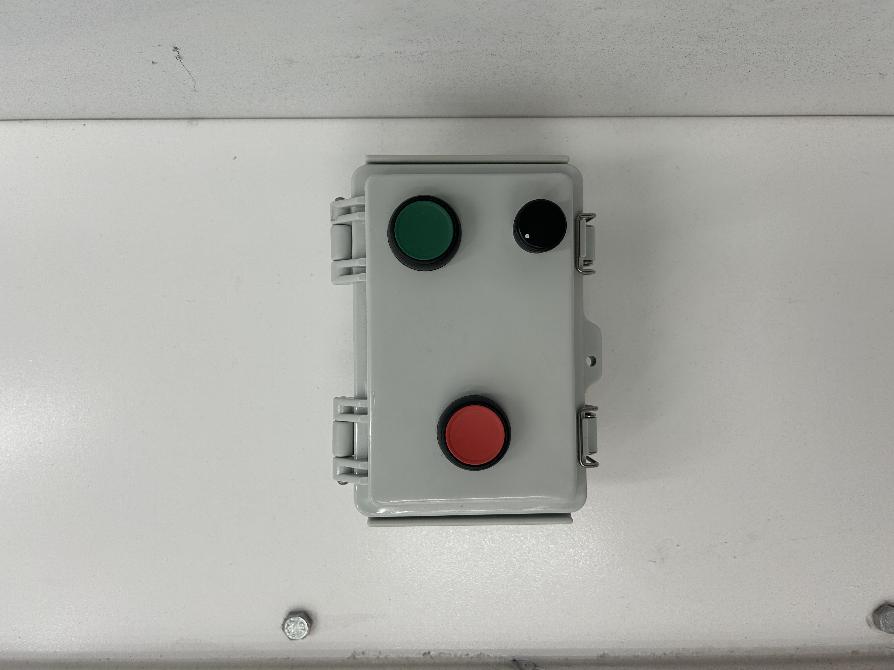

Motor control, variable speed, soft start a lot of good stuff you can do with VFDs if you have a professional to set it up for you it can be very complicated.
This is a beautiful Allen Bradley unit I specced out for use for fan speed control for a spraybooth. This unit is incredible, but it can be very difficult to program, but I am very good at it.
Here I was able to install a separate cotrol unit for the VFD on the interior of the spraybooth. This allowed the spraybooth to be maintained as a clean room for high quality paint finishing by eliminating the need to turn the fan on before entering the booth which would allow dust into the booth from the personnel door.
